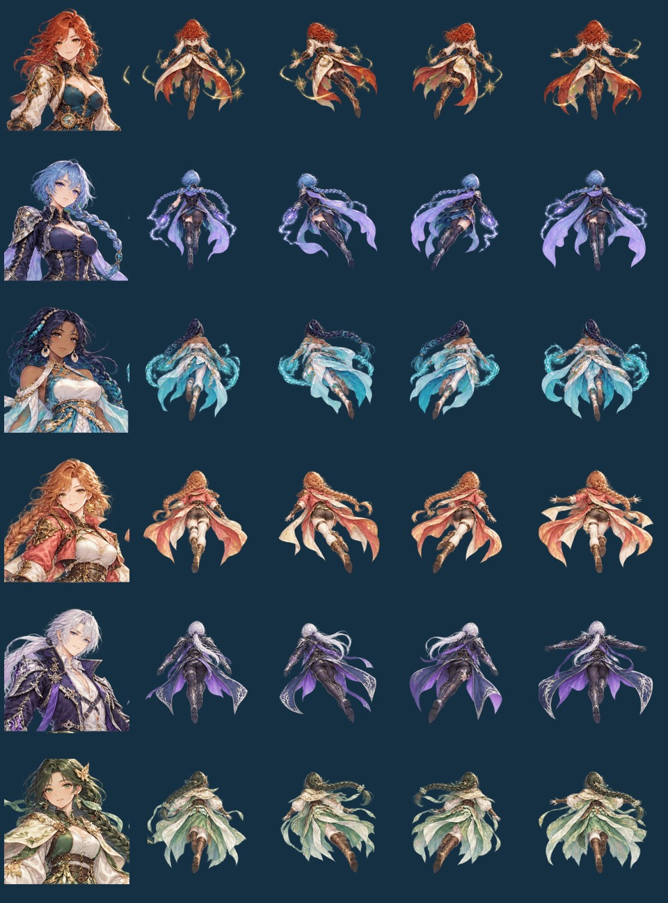

STARBORNE / ORIGINAL TRAVELLERS
六位旅人，启程云海。
星渡 3.8 将人物改为原创设计，保留幻想动画风格。云海吞没航线，星轨逐一熄灭；绘师、信使、记述者、机匠、守望者和引航员，各自寻找归航的灯。
打开手机试玩 ↗
战斗使用朝上飞行的背面与侧后视角；正面肖像用于选人和大招演出。四种姿态之间平滑过渡，配合转向拖曳、发梢与衣摆连续变形、飞行起伏和射击回弹。

岚珀与绯穗沿用散射，霁弦与夜珩沿用贯穿，澜歌与青翎沿用追踪。移动、攻击、自动协战、大招、难度与三关规则保持原样。
素材与验证说明
本轮使用 imagegen 内置工具生成两张原始角色图集，随后做透明通道检查、连通域分离、对齐、缩放与 WebP 编码。素材已保存至游戏项目的 assets/visual-v3.8/，并嵌入发布包。查看完整生成提示词。
81 项测试通过。玩法核心与上版逐字一致；新增验证覆盖六角色的攻击类型映射、动画不改动玩家状态、暂停冻结、转向缓动、施法恢复及减少动态设置。浏览器检查了六角色、WebGL / Canvas、390×844 与 360×640 布局、真实移动、大招消耗和暂停。实体手机性能仍取决于设备。
肖像为原创建模参考插画，运行时使用二维精灵和网格变形。本页战斗截图来自正常游戏；用于密集弹幕检查的本地 QA 夹具未发布。